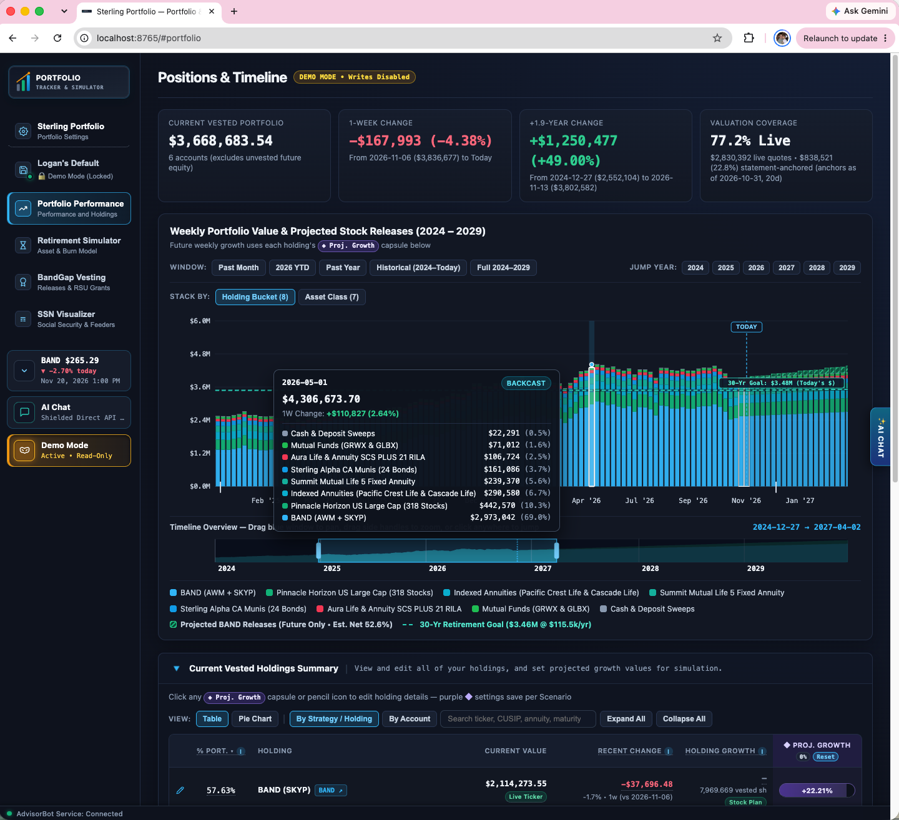
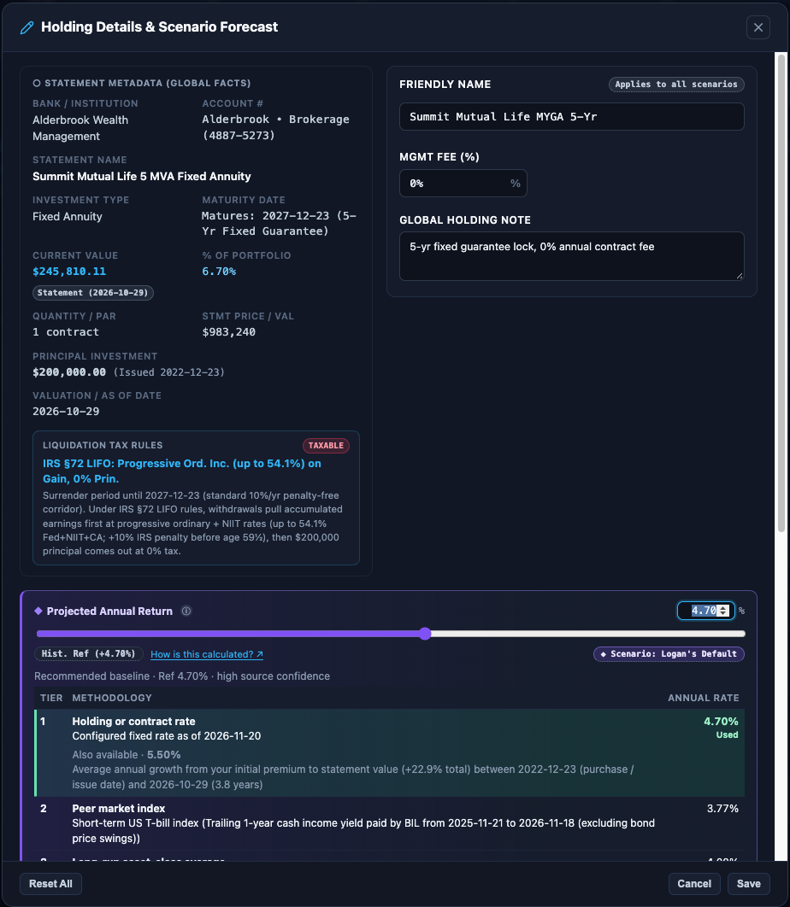
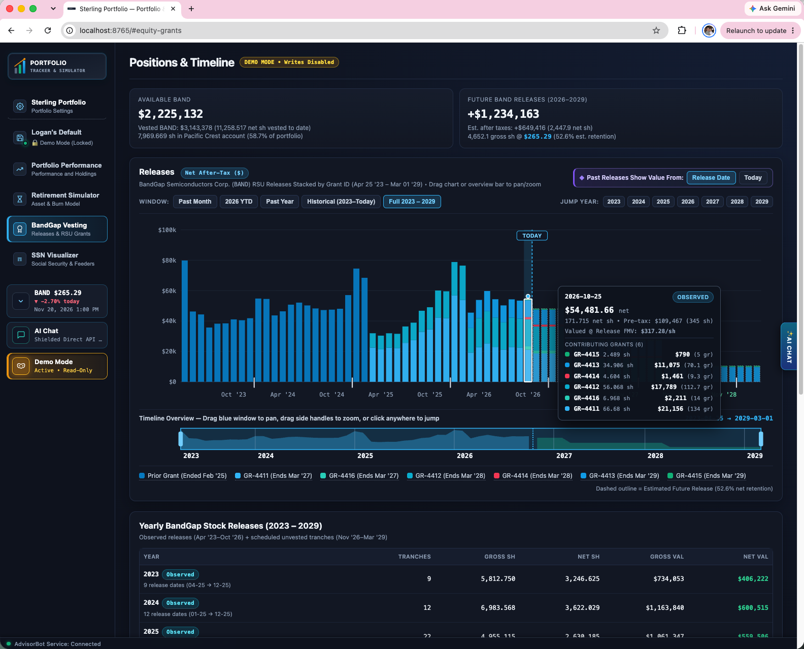
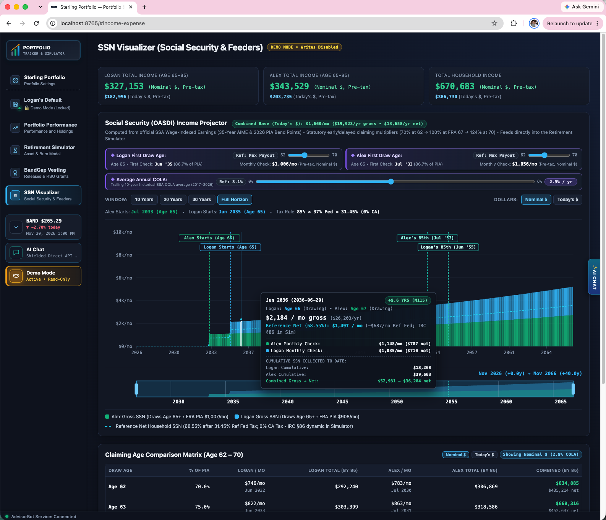
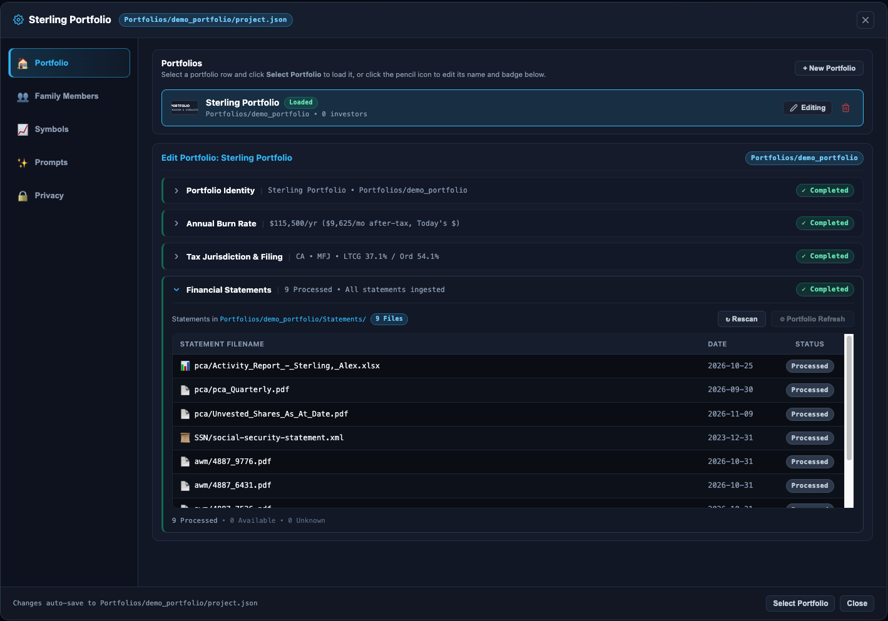
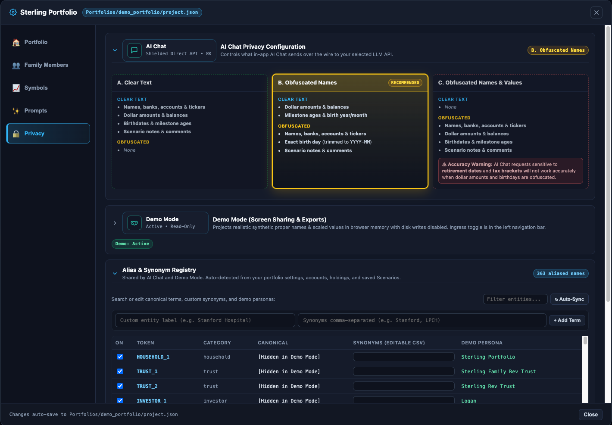
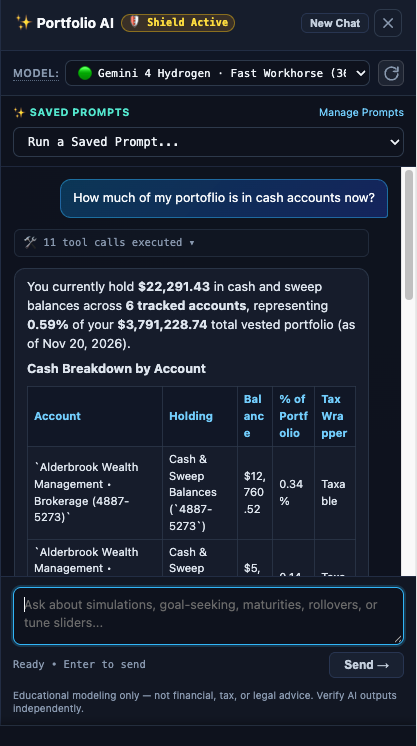

AdvisorBot — Tax-Aware Retirement Simulator & Portfolio Analytics
An interactive, local-first portfolio analytics, statement ingestion, and tax-aware retirement simulation platform for households and equity-compensated professionals.
Use AdvisorBot to explore whether your savings can support planned spending and how different retirement choices affect that outlook. Taxes, required withdrawals, and Social Security benefits are estimates used in those forecasts.
(A) Synopsis
AdvisorBot is a privacy-first financial planning dashboard that runs locally on your computer. It imports PDF, Excel (XLSX), JSON, and Social Security (SSA XML) statements into a private local database, and supports custom parser plugins for additional institutions or file formats.
From this consolidated view of your accounts, AdvisorBot serves a self-contained web dashboard covering:
- Portfolio Performance: Consolidated positions, account and strategy allocation breakdowns, Yahoo Finance market pricing, editable holding forecasts with tooltips showing the selected source, dates and available alternative rates, and a historical-through-forecast weekly portfolio timeline (
Nominal $/Today's $). - Stock Vesting: Multi-grant RSU/GSU tracking, historical release-date Fair Market Value (FMV) vs. current market value, tax withholding retention ratios, and future scheduled vesting timelines.
- Retirement Simulator: Monthly progressive-tax drawdown engine modeling high-basis vs. low-basis equity tranches, capital loss carryforwards, IRS §72 LIFO non-qualified annuities, SECURE 2.0 Required Minimum Distributions (RMDs) starting at age 73 or 75, Roth vs. Traditional IRA wrappers, pre-retirement work/401(k) plans, and scheduled cashflow actions under Simulation Controls: Market Correction (
None, crash presets, or custom downturn) and Simulation (None, Monte Carlo, or 1929–2025 Multi-Asset Historical Cohorts). Holding Details charts 40 years of projected annual returns and lets you set multi-tier mean-reversion half-lives. - SSN Visualizer: Social Security OASDI Primary Insurance Amount (PIA) bend-point calculations from official
ssa.govXML statements, claiming-age modeling (ages 62–70), COLA compounding, and retirement feeder integration. - Scenarios: Interactive what-if scenario manager for saving, duplicating, comparing, recording AI Advisor concurrences under
## Upvotes & Concurrencesin Details & Notes →, and toggling🔒 Protected/🔓 Unprotectedper scenario against accidental edits or deletion. - In-App AI Assistant & MCP Integration: Local (Ollama, LM Studio) and cloud (Gemini, Claude, OpenAI) AI support with configurable Privacy Shield modes (A. Clear Text, B. Obfuscated Names, and C. Obfuscated Names & Values), read-only Demo Mode for screen shares, and a Model Context Protocol (MCP) server for connecting external AI assistants.
All statement parsing, data storage, and portfolio math run strictly on your local machine (localhost). No brokerage login credentials or raw statements are sent anywhere. Market quotes fetch only public ticker symbols from Yahoo Finance; when using cloud AI providers, outbound messages follow your chosen Privacy Shield mode (A. Clear Text, B. Obfuscated Names, or C. Obfuscated Names & Values).
Gallery
Click any screenshot to inspect full-size, or play the interactive simulation walkthrough below.








(B) Setup and Workflow
1. Quickstart Prerequisites
- Python 3.11+ installed (the core valuation/simulator runs on the Python standard library)
- Git installed (or download and extract the repository ZIP archive)
- Modern web browser (Chrome, Firefox, Safari, Edge)
- Internet access at refresh time (optional — only needed to fetch public ticker quotes/10Y history from Yahoo Finance; offline tests and
--offlineplugin checks work without network access)
On the GitHub repository page, choose Code and copy the HTTPS URL. Run git clone with that URL, then open a terminal in the cloned folder (or extracted ZIP folder). Create a virtual environment and install the optional extras (ingest for PDF/XLSX statement parsing via pypdf/openpyxl, mcp for external desktop agents, ui for Pillow badge image processing; add dev if running the pytest suite):
macOS (Terminal — zsh / bash)
# Verify Python 3.11+ (if needed, install via Homebrew: brew install python@3.12)
python3 --version
# Create & activate a virtual environment, then install dependencies
python3 -m venv .venv
source .venv/bin/activate
python -m pip install -e ".[mcp,ingest,ui]"Linux (Terminal — bash / zsh)
# Verify Python 3.11+ & venv support
# Ubuntu / Debian: sudo apt update && sudo apt install -y python3 python3-venv python3-pip
# Fedora / RHEL: sudo dnf install -y python3 python3-pip
python3 --version
# Create & activate a virtual environment, then install dependencies
python3 -m venv .venv
source .venv/bin/activate
python -m pip install -e ".[mcp,ingest,ui]"Windows (PowerShell or Command Prompt)
# Verify Python 3.11+ (if needed, install via winget: winget install Python.Python.3.12)
py -3 --version
# Create & activate a virtual environment, then install dependencies
py -3 -m venv .venv
.\.venv\Scripts\Activate.ps1 # In Command Prompt (cmd.exe): .venv\Scripts\activate.bat
python -m pip install -e ".[mcp,ingest,ui]"Windows PowerShell note: If script activation is blocked, run Set-ExecutionPolicy -Scope CurrentUser RemoteSigned once in PowerShell, or invoke .\.venv\Scripts\python.exe directly without activating.
2. Standard User Workflow
-
Start & Open the Dashboard:
Run the local dashboard server from theAdvisorBotrepo root:- macOS / Linux:
.venv/bin/python Scripts/advisorbot_server.py --open(on headless or WSL setups without a desktop browser opener, omit--openand open the printedhttp://127.0.0.1:8765/?token=...URL manually) - Windows:
.\.venv\Scripts\python.exe Scripts\advisorbot_server.py --open
.venvvirtual environment is already activated in the current terminal,python Scripts/advisorbot_server.py --openworks on all platforms.) This starts the local dashboard onhttp://127.0.0.1:8765/and opens an authenticated session in your browser.Local session: Use AdvisorBot on a trusted personal device. Run--opento start the server or open the verified instance already running on that port. The browser automatically exchanges the launch link for a signed, year-long cookie. Bookmark the clean dashboard URL for later visits. - macOS / Linux:
-
Create & Configure Your Portfolio (
Settings ⚙️):
Open Portfolio Settings (⚙️) > Portfolio, click + New Portfolio (or initializePortfolios/<PortfolioName>/manually per Chapter 1), and complete the required fields (Portfolio Name, Annual Burn Rate, Tax Jurisdiction & Ceilings, and at least one Family Member Name & Birthdate) so the portfolio moves from Incomplete to ready and Select Portfolio activates. Use the remaining Settings tabs to set Symbols (tracked tickers/indices with your primary equity first), Prompts, and Privacy (AI Chat Privacy Shield A/B/C, Demo Mode, Alias Registry, MCP toggle). -
Add Statements & Refresh:
Drop brokerage statements intoPortfolios/<PortfolioName>/Statements/(supports Wells Fargo.pdf, Morgan Stanley.pdf/.xlsx,*.statement.json, and*.grants.json), then click ↻ Rescan and ⚙ Portfolio Refresh in Settings > Portfolio. Upload officialssa.gov.xmlearnings statements per investor inside Settings > Family Members > Select ssa.gov XML file. For unsupported institutions, see Chapter 1, Section 1.5 to convert exports into universal*.statement.json, or inspect and build a customStatementPlugininPortfolios/<PortfolioName>/Plugins/(viaScripts/holdings.py inspect-statementandtest-plugin --offline, opted in viaallowed_pluginsinproject.json). -
Explore & Model:
- Inspect aggregated holdings, asset allocation, and vesting timelines.
- Experiment in the Retirement Simulator using Simulation Controls (Market Correction + Simulation:
None,Monte Carlo,Historical), Inclusions, and Overrides. - Save what-if scenarios, toggle
🔒 Protected/🔓 Unprotectedon benchmark plans, or consult the in-page AI Financial Assistant. A saved Advisor workflow presents its analysis first. If it proposes a new scenario or a vote/concurrence on an existing scenario, choose the corresponding button to apply it (an Advisor vote appends a timestamped signature under## Upvotes & Concurrencesin Details & Notes →).
(C) Index of User Documentation
Comprehensive guides and reference manuals live in the Docs/ directory:
-
User & System Guide Portal (
Docs/index.html):- Chapter 1: Setting Up Your Portfolio — Creating a portfolio folder, configuring portfolio settings, adding statements, reviewing status indicators, and writing custom statement plugins.
- Chapter 2: Core Application Walkthrough — Portfolio Performance, Stock Vesting, Retirement Simulator, SSN Visualizer, Scenario Management, and Holding Forecast Methodology.
- Chapter 3: Security & Privacy Architecture — Local-only architecture, session authentication, Privacy Shield profiles, Demo Mode, and local AI setup.
- Chapter 4: Developer & Agent Integration — Model Context Protocol (MCP) server setup, privacy boundaries, engineering guardrails, and isolated fixture test suite reference.
-
Examples/Starter Templates:Examples/project.example.json&Examples/grants.example.json: Starter templates for portfolio configuration and equity-grant schedules.Examples/llm_config.gemini.json,llm_config.claude.json,llm_config.openai.json,Examples/llm_config.local_ollama.json(and Chapter 1.2 LLM Configuration Guide): Starter templates for cloud and local AI providers.Examples/mcp_config.example.json: Starter configuration for connecting external MCP clients.
(D) License, Attribution & Disclaimer
- License: Released under the BSD 3-Clause License (
LICENSEin the repository root). - Attribution: Derivative works and redistributions must preserve the copyright/license notice and should acknowledge AdvisorBot per
NOTICE. Per Clause 3 of the BSD 3-Clause License, neither the name AdvisorBot nor contributor names may be used to endorse or promote derived products without prior written permission. - Disclaimer: Review the full Financial, Tax, AI & Security Disclaimer below before using simulations, tax estimates, market quotes, or AI Chat / MCP outputs.
Full Financial, Tax, AI & Security Disclaimer (DISCLAIMER.md)
Important
1. No Financial, Investment, Tax, or Legal Advice
AdvisorBot is free, open-source, self-hosted software provided strictly for personal educational, informational, and exploratory modeling purposes. Nothing in this repository, its dashboard, simulations, charts, liquidation optimizer, Social Security projections, documentation, or AI assistant outputs constitutes financial, investment, tax, legal, accounting, or estate-planning advice. Neither AdvisorBot nor its author(s) or contributors are a Registered Investment Advisor (RIA), broker-dealer, fiduciary, Certified Public Accountant (CPA), enrolled agent, or attorney. Your use of AdvisorBot does not create an advisor-client, fiduciary, or professional relationship of any kind.
2. Simulation, Tax & Regulatory Approximation Limits
Financial planning rules and brokerage accounting are complex and change frequently. AdvisorBot's calculations—including capital gains lot matching, loss carryforwards, federal/state tax rate modeling, non-qualified annuity IRS Section 72 LIFO logic, SECURE 2.0 Required Minimum Distributions (RMDs), Social Security PIA/claiming adjustments, Monte Carlo sampling, and historical cohort replays—are simplified mathematical models that may omit edge cases, local rules, fees, wash-sale adjustments, AMT/NIIT interactions, early-withdrawal penalties, or brokerage execution constraints. Always independently verify figures against official brokerage statements, SSA records, IRS guidance, and qualified licensed professionals before making any financial, tax, retirement, or investment decision.
3. AI / LLM & Agent Uncertainty
AdvisorBot includes optional AI Chat and Model Context Protocol (MCP) integrations. Large language models (local or cloud-hosted) are probabilistic systems that can hallucinate numbers, misread tool schemas, cite outdated tax law, omit material caveats, or generate flawed reasoning. You are solely responsible for independently reviewing, verifying, and approving every AI-generated summary, calculation, response, or saved what-if scenario before relying upon it.
4. Market Data & External APIs
Live quotes (such as Yahoo Finance lookups via the local sidecar) come from third-party public feeds and may be delayed, incomplete, stale, or inaccurate. Optional remote LLM providers (Google Gemini, Anthropic Claude, OpenAI, or others you configure) operate under their own respective Terms of Service and privacy policies, and are governed by the Privacy Shield profile that you choose to enable.
5. Self-Hosted Security & User Responsibility
AdvisorBot is engineered for local-first operation and includes built-in privacy translation and host/token controls, but no software guarantees complete security. You remain solely responsible for securing your operating system, local network, API keys, financial statements, SQLite databases, scenario files, and backups, and for evaluating which Privacy Shield or MCP settings match your risk tolerance.
6. Assumption of Risk & No Liability
By running, modifying, or distributing AdvisorBot, you acknowledge that all investment, retirement, tax, and operational risks rest solely with you. In no event shall the copyright holders, authors, or contributors be liable for any investment loss, tax penalty, missed opportunity, data loss, security incident, or any direct, indirect, incidental, special, exemplary, or consequential damages arising from use of this software or its outputs.